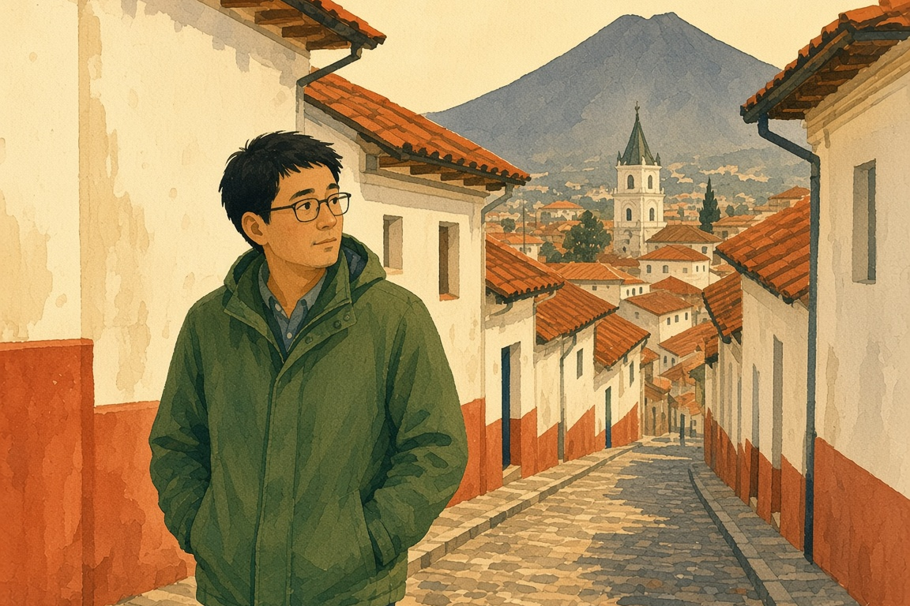

- A1
- Una capital
Quito, una capital en las nubes
A 2.850 metros, el aire es fresco y las nubes parecen cerca de los techos.
Texto
Hoy estoy en Quito, la capital de Ecuador. La ciudad está en los Andes, a unos 2850 metros de altura. Desde una plaza veo techos rojos y, a lo lejos, el volcán Pichincha. El aire es fresco. Camino despacio porque, al principio, me cansa un poco subir.

Quito está cerca de la línea ecuatorial, pero no hace un calor fuerte. La altura cambia el clima. Mi primo vive en Guayaquil, junto al mar, a unos cuatro metros de altura. Allí el aire es cálido. Aquí uso una chaqueta.
Me gusta esta ciudad alta, entre montañas. Esta tarde voy a caminar otra vez, sin prisa, y voy a mirar las nubes cerca de los techos. Ahora entiendo el nombre: Quito es una capital en las nubes.